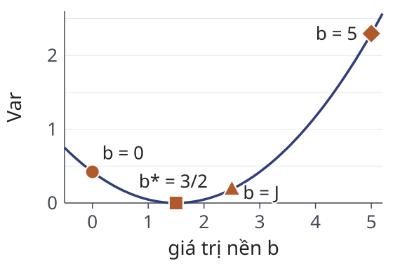
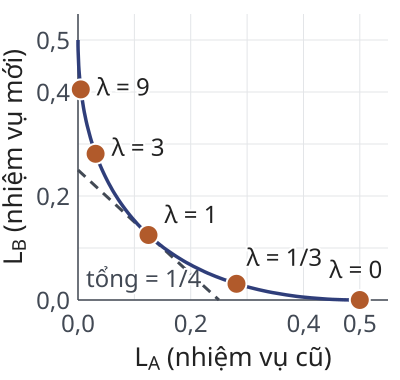

Khi dữ liệu do chính sách sinh ra, gradient của mục tiêu ước lượng được không chệch nếu chính sách khả vi và môi trường hữu hạn không phụ thuộc tham số, còn khi nhiệm vụ thay đổi, cần nêu trước giao thức và ma trận đánh giá.
Lý thuyết học thống kê · Năm học 2026–2027, học kỳ 1
Khoa Công nghệ thông tin, Trường Đại học Công nghệ, ĐHQGHN
Tiên quyết và quy ước
Nhắc lại: (T1): $Z_1,\ldots,Z_m$ độc lập cùng phân bố $D$; $L_D(w)=\mathbb E_{z\sim D}\ell(w,z)$.
Hệ quả 02.10(b): (T1), (T2), (T3) ($\ell\in[0,1]$), $h$ cố định, $\delta\in(0,1)$; với xác suất ít nhất $1-\delta$, $\lvert L_S(h)-L_D(h)\rvert\le\sqrt{\ln(2/\delta)/(2m)}$.
Bài 05: chiếu $\operatorname{proj}_W$, dưới vi phân $\partial F$; (C): $W$ khác rỗng, đóng, lồi, $F$ lồi.
Định lý 05.14 cần (C), (G1) $\mathbb E_\xi\varphi(w,\xi)\in\partial F(w)$, (G2) $\mathbb E_\xi\lVert\varphi(w,\xi)\rVert^2\le G^2$.
Bài 09: ước lượng gradient log; đổi chỗ đạo hàm và kì vọng.
Tổng phần thưởng (return) $R(\tau)=\sum_{t=0}^{H-1}r(s_t,a_t)$; $r_t=r(S_t,A_t)$; mục tiêu $J(\theta)=\mathbb E_{\tau\sim p_\theta}R(\tau)$.
Tối ưu chính sách (policy optimization): tìm $\theta$ làm $J$ lớn; đối tượng so sánh $\sup_{\theta\in\Theta}J(\theta)$.
Lưu ý: ở Bài 01, $D$ không phụ thuộc $h$; ở đây $p_\theta$ phụ thuộc tham số, $R$ thì không.
Ví dụ: quá trình quyết định Markov hai bước
Ví dụ 10.2. $\mathcal S=\{s_0,s_1,s_2\}$, $\mu_0(s_0)=1$, $\mathcal A=\{0,1\}$, $H=2$; từ $s_0$, hành động $1$ tới $s_1$ với xác suất $0{,}8$, hành động $0$ với xác suất $0{,}2$; chính sách bảng, $\theta=0$.
$\big(r(s,1),r(s,0)\big)$: $(0,1)$ ở $s_0$, $(3,1)$ ở $s_1$, $(0,1)$ ở $s_2$; cột ghi $(a_0,S_1,a_1)$.
$\tau$
$1,s_1,1$
$1,s_1,0$
$1,s_2,1$
$1,s_2,0$
$0,s_1,1$
$0,s_1,0$
$0,s_2,1$
$0,s_2,0$
$p_0(\tau)$
$0{,}2$
$0{,}2$
$0{,}05$
$0{,}05$
$0{,}05$
$0{,}05$
$0{,}2$
$0{,}2$
$R(\tau)$
$3$
$1$
$0$
$1$
$4$
$2$
$1$
$2$
Tổng phần thưởng kì vọng khi chọn $1$ hay $0$ ở $s_0$: $1{,}7$ hay $1{,}8$; $J(0)=1{,}75$.
Xác suất tới $s_1$ là $0{,}2+0{,}6\,\pi_\theta(1\mid s_0)$: phân bố của $S_1$ phụ thuộc $\theta_{s_0}$.
Tác tử biết $\pi_\theta$, không biết $\mu_0$, $P$, $r$: không tính được $J$, $\nabla J$ bằng công thức.
3.Gradient chính sách và thuật toán REINFORCE
Khi môi trường không phụ thuộc tham số, gradient của mục tiêu là kì vọng của một đại lượng tính được trên quỹ đạo.
gradient log · gradient chính sách · ước lượng không chệch · REINFORCE · điểm dừng
Đồng nhất thức gradient log
Gradient log (score function) $\nabla_\theta\ln p_\theta$; giá (support) của $p_\theta$: các $\tau$ có $p_\theta(\tau)>0$.
Bổ đề 10.3.Giả thiết: $\mathcal T$ hữu hạn, không phụ thuộc $\theta$; với mỗi $\theta\in\Theta$ mở, $p_\theta$ là hàm xác suất trên $\mathcal T$; $\theta\mapsto p_\theta(\tau)$ khả vi.
Bảo đảm: đồng nhất thức, mọi $\theta\in\Theta$. (a) Trên giá, $\nabla p_\theta=p_\theta\nabla\ln p_\theta$; ngoài giá, $\nabla p_\theta=0$.
Bảo đảm: đồng nhất thức, mọi $\theta\in\Theta$: $J$ khả vi, gradient chính sách (policy gradient) $\nabla J(\theta)=\mathbb E_{\tau\sim p_\theta}\hat g(\tau)$.
Trung bình $m$ lượt độc lập cùng $\theta$: không chệch, hiệp phương sai chia cho $m$; không cần $\mu_0$, $P$, $r$.
Ý tưởng chứng minh: gradient theo quỹ đạo
($\mathcal S$, $\mathcal A$, $H$ hữu hạn; (Π)) $J=\sum_\tau p_\theta(\tau)R(\tau)$ là tổng hữu hạn các hàm khả vi: $\nabla J=\sum_\tau R(\tau)\nabla p_\theta(\tau)$.
(Bổ đề 10.3(a)) Bỏ các $\tau$ ngoài giá, thay $\nabla p_\theta=p_\theta\nabla\ln p_\theta$: $\nabla J=\mathbb E[R(\tau)\nabla\ln p_\theta(\tau)]$.
((MDP): $\mu_0$, $P$ không phụ thuộc $\theta$) $\ln p_\theta(\tau)=\ln\mu_0(s_0)+\sum_t\ln\pi_\theta(a_t\mid s_t)+\sum_t\ln P(s_{t+1}\mid s_t,a_t)$; số hạng đầu và cuối không chứa $\theta$.
Khi $P$ phụ thuộc $\theta$: bước 3 còn số hạng $\nabla\ln P$.
Kì vọng gradient log: $\tfrac34\cdot\tfrac14+\tfrac14\cdot(-\tfrac34)=0$ (Bổ đề 10.3(b)).
Diễn giải: mỗi lần rút, $\lvert\hat g\rvert=0{,}75$, gấp đôi $\tfrac38$; với xác suất $\tfrac14$, $\hat g$ ngược dấu với đạo hàm.
Ví dụ: gradient của quá trình hai bước
Ví dụ 10.5. Ví dụ 10.2, $\theta=0$; tọa độ $\theta_s$ của gradient log của chính sách bằng $a-\tfrac12$, các tọa độ khác bằng $0$.
Tổng $p_0(\tau)R(\tau)$: $0{,}85$ khi $a_0=1$, $0{,}9$ khi $a_0=0$; $\partial J/\partial\theta_{s_0}=\tfrac12\cdot0{,}85-\tfrac12\cdot0{,}9=-0{,}025$.
$\theta_{s_1}$ (bốn quỹ đạo qua $s_1$, thừa số $a_1-\tfrac12$): $0{,}3-0{,}1+0{,}1-0{,}05=0{,}25$.
Tương tự $\theta_{s_2}$: $-0{,}125$; sai phân hữu hạn của $J$ cho cùng véc-tơ.
Nhắc lại: tổng phần thưởng kì vọng khi chọn $1$ hay $0$ ở $s_0$: $1{,}7$ hay $1{,}8$ (Ví dụ 10.2).
Vì $\tfrac{d}{d\theta}\pi_\theta(1\mid s_0)=\tfrac14$ tại $0$: $\partial J/\partial\theta_{s_0}=\tfrac14(1{,}7-1{,}8)=-0{,}025$.
Ví dụ: luật chuyển phụ thuộc tham số
Ví dụ 10.6. Như Ví dụ 10.2, nhưng từ $s_0$, với mọi hành động, robot tới $s_1$ với xác suất $q=1/(1+e^{-\theta_{s_0}})$; $\theta=0$, $q=\tfrac12$.
Đạo hàm đúng theo $\theta_{s_0}$: bước đầu $-\tfrac14$; bước sau $\tfrac32q(1-q)=0{,}375$; tổng $0{,}125$.
Ước lượng của Định lý 10.4: $(r_0+r_1)(A_0-\tfrac12)$; $r_1$ độc lập với $A_0$, nên kì vọng bằng $\mathbb E[r_0(A_0-\tfrac12)]=-0{,}25$.
Kết luận: ước lượng ngược dấu với đạo hàm đúng; nó thiếu gradient của $\ln P(S_1\mid s_0,A_0)$ (bước 3 của chứng minh).
Thuật toán REINFORCE
Thuật toán 10.6. Môi trường chưa biết; $\Theta$ là cả không gian tham số; $\eta_1,\ldots,\eta_T>0$ và $\theta_1$ tất định.
Với $j=1,\ldots,T$: chạy $\pi_{\theta_j}$ một lượt, được $\tau_j$; tính $\hat g_j=R(\tau_j)\sum_t\nabla\ln\pi_{\theta_j}(A_t\mid S_t)$ (Định lý 10.4); đặt $\theta_{j+1}=\theta_j+\eta_j\hat g_j$.
Khi biết $\tau_1,\ldots,\tau_{j-1}$: $\theta_j$ cố định và $\tau_j\sim p_{\theta_j}$, nên $\mathbb E[\hat g_j\mid\tau_1,\ldots,\tau_{j-1}]=\nabla J(\theta_j)$.
$\hat g_j$ là gradient ngẫu nhiên không chệch có điều kiện; (C) và (G1) của Định lý 05.14 cần $-J$ lồi.
Ví dụ: một điểm dừng là điểm cực tiểu
Ví dụ 10.7. $H=2$; từ $s_0$, hành động $1$ tới $s_1$, $0$ tới $s_2$; $r(s_1,1)=1$, $r(s_2,0)=0{,}6$, còn lại $0$; một tham số chung $q=\pi_\theta(1\mid s)=1/(1+e^{-\theta})$.
$J=q^2+0{,}6(1-q)^2$; $dJ/dq=0$ tại $q=0{,}375$ ($\theta=\ln0{,}6$): điểm dừng là cực tiểu của $J$, nên $-J$ không lồi.
Đi lên theo gradient đúng: từ $\theta=-1$, $J\to0{,}6$; từ $\theta=-0{,}4$, $J\to1$.
Nhắc lại: Mệnh đề 08.12 cho $F=-J$: $J$ $\beta$-trơn, bị chặn trên; phương sai có điều kiện $\le\sigma^2$; $\eta$ hằng, $\eta\le1/\beta$.
Bảo đảm: theo kì vọng, $\frac1T\sum_j\mathbb E\lVert\nabla J(\theta_j)\rVert^2\le\frac{2(\sup J-J(\theta_1))}{\eta T}+\beta\eta\sigma^2$: điểm dừng xấp xỉ tại $\theta_\tau$, $\tau$ rút đều.
Bài tập: thuật toán REINFORCE cho bài toán bandit
Bài tập 10.1. Xét bài toán bandit hai hành động với chính sách sigmoid, phần thưởng tất định $r(1)=4$, $r(0)=0$, tại $\theta=-\ln3$.
(b) Viết ước lượng $\hat g$ của Định lý 10.4 cho một lượt. Liệt kê các giá trị của nó cùng xác suất, kiểm rằng kì vọng bằng $J'(\theta)$, và tính phương sai.
Ý tưởng chứng minh: tổng phần thưởng từ bước $t$ và giá trị nền
Nhắc lại: kì vọng có điều kiện theo lịch sử, tính chất tháp (Bài 05).
(chính sách chỉ nhìn $S_t$; Bổ đề 10.3) Khi biết $\mathcal F_t$, $A_t\sim\pi_\theta(\cdot\mid S_t)$: $\mathbb E[\nabla\ln\pi_\theta(A_t\mid S_t)\mid\mathcal F_t]=\sum_a\nabla\pi_\theta(a\mid S_t)=0$.
(tính chất tháp) Với $f$ là hàm của $\mathcal F_t$: $\mathbb E\big[f(\mathcal F_t)\nabla\ln\pi_\theta(A_t\mid S_t)\big]=0$.
$f=r_{t'}$, $t'<t$: Mệnh đề 10.7(a); viết $R(\tau)=\sum_{t'<t}r_{t'}+R_{\ge t}$ được (b). (giả thiết giá trị nền) $f=b_t$: Hệ quả 10.8.
Giá trị nền phụ thuộc $A_t$: bước 2 hỏng.
Ví dụ: phương sai và độ chệch theo giá trị nền
Ví dụ 10.8. Ví dụ 10.4, $b$ hằng: $\hat g_b=(r(A)-b)(A-\tfrac34)$ có kì vọng $\tfrac38$ (Hệ quả 10.8).
$b$
$A=1$
$A=0$
$\operatorname{Var}\hat g_b$
$0$
$3/4$
$-3/4$
$27/64$
$5/2$
$1/8$
$9/8$
$3/16$
$3/2$
$3/8$
$3/8$
$0$
$5$
$-1/2$
$3$
$147/64$

$\operatorname{Var}\hat g_b$ theo $b$; bốn điểm của bảng.
$b^*=\tfrac32$: phương sai $0$; $b=J(\ln3)=\tfrac52$ không tốt nhất; $b=5$ tăng phương sai hơn năm lần.
Ví dụ 10.9. Giá trị nền $\kappa A$ phụ thuộc hành động: kì vọng $\tfrac38-\tfrac{3\kappa}{16}$, bằng $0$ khi $\kappa=2$.
Ví dụ: ba ước lượng trên quá trình hai bước
Ví dụ 10.10. Ví dụ 10.2, $\theta=0$: (i) Định lý 10.4; (ii) Mệnh đề 10.7(b); (iii) (ii) trừ tổng phần thưởng kì vọng còn lại: $1{,}75;\ 2;\ \tfrac12$ ở $s_0$, $s_1$, $s_2$.
$\operatorname{Var}$
$\theta_{s_0}$
$\theta_{s_1}$
$\theta_{s_2}$
Vết (trace)
(i)
$\tfrac{1619}{1600}$
$\tfrac{11}{16}$
$\tfrac{79}{320}$
$1{,}94625$
(ii)
$\tfrac{1619}{1600}$
$\tfrac9{16}$
$\tfrac3{64}$
$1{,}62125$
(iii)
$\tfrac{197}{800}$
$\tfrac1{16}$
$\tfrac1{64}$
$0{,}324375$
Cùng kì vọng $(-0{,}025;\,0{,}25;\,-0{,}125)$; (iii) giảm vết sáu lần so với (i).
Đổi ví dụ ($r=-2$ ở $s_0$, luôn tới $s_1$, chọn ở $s_0$ không phụ thuộc $\theta$): phương sai (i) $0$, (ii) $1$; (ii) tăng phương sai.
Ví dụ: dịch phần thưởng trong bài toán đề xuất
Ví dụ 10.11. Hệ thống đề xuất hiển thị nội dung $A\in\{0,1\}$, $\theta=0$; người dùng nhấp ($X=1$) với xác suất $0{,}6$ nếu $A=1$, $0{,}4$ nếu $A=0$; $R(\tau)=c+X$.
(PT): $\mathbb E[r_t\mid S_t=s,A_t=a]=r(s,a)$; khi biết $(S_t,A_t)$, phân bố của $r_t$ không phụ thuộc $\theta$; $r_t$ không ảnh hưởng các bước sau.
Dưới (PT), $(R(\tau)-b)(A-\tfrac12)$ không chệch (Hệ quả 10.8); $J'(0)=0{,}05$ với mọi $c$.
Phương sai với $b=0$: $0{,}1225$ ($c=0$), $27{,}6225$ ($c=10$); với $b=J(0)=c+\tfrac12$: $0{,}06$.
Mô phỏng, $c=10$, $b=0$: $49/100$ lần chạy kết thúc với $\pi_\theta(1)<0{,}5$; có giá trị nền: $0/100$.
Ví dụ: cận Hoeffding cho đánh giá một chính sách cố định
$\theta$ cố định: các lượt thỏa (T1), có cận với xác suất cao.
Ví dụ 10.12. Ví dụ 10.2, $\theta$ cố định trước khi chạy, $m=1000$ lượt, $\delta=0{,}05$, $R(\tau_j)\in[0,4]$; với xác suất ít nhất $0{,}95$,
Nhắc lại: đảo cận đuôi thành bán kính và cỡ mẫu (Bài 02): bán kính $\le0{,}05$ cần $11\,805$ lượt.
$\theta$ do Thuật toán 10.6 chọn từ chính các lượt: cận không áp dụng.
Bài tập: giá trị nền trừ ở bước sau
Bài tập 10.2(c). Trên Ví dụ 10.2, $\theta=0$, với ước lượng của Mệnh đề 10.7(b), giữ số hạng $t=0$ và thay $R_{\ge1}$ bằng $R_{\ge1}-r_0$.
Giá trị nền này có hợp lệ theo Hệ quả 10.8 không? Tính kì vọng và phương sai của tọa độ $\theta_{s_1}$, so với $\tfrac9{16}$ (ước lượng (ii), Ví dụ 10.10).
Lời giải: hợp lệ: $r_0$ là hàm của $\mathcal F_1=(S_0,A_0,S_1)$; kì vọng $0{,}25$, phương sai $0{,}4875<\tfrac9{16}=0{,}5625$.
5.Giao thức học liên tục và ma trận đánh giá
Một bài toán học liên tục gồm dãy nhiệm vụ, giới hạn bộ nhớ và một ma trận đánh giá.
nhiệm vụ · ngân sách bộ nhớ · ma trận đánh giá · chuyển đổi ngược · độ quên
Giao thức học liên tục
Định nghĩa 10.10. Nhiệm vụ $k$: phân bố $D_k$ trên $\mathcal Z$, chưa biết, $L_k=L_{D_k}$; (TK): $S^{(k)}\sim D_k^{m_k}$, độc lập.
Cố định: $D_1,\ldots,D_K$, thứ tự; ngẫu nhiên: $S^{(k)}$, bộ nhớ, tập kiểm tra độc lập; so sánh: học chung hoặc riêng.
$w^{(k)}$: tham số sau nhiệm vụ $k$.
Ngân sách bộ nhớ (memory budget) $M$: nhiệm vụ $k$ dùng $S^{(k)}$, $w^{(k-1)}$, $\le M$ quan sát cũ.
Định danh nhiệm vụ (task identity): có hay không, chọn trước.
Ma trận đánh giá và các độ đo
Định nghĩa 10.11. Ma trận đánh giá (evaluation matrix) $\mathrm{acc}_{k,i}$: độ chính xác phân lớp (classification accuracy) của $w^{(k)}$ trên tập kiểm tra của nhiệm vụ $i$.
Độ chính xác phân lớp trung bình cuối cùng (final average accuracy): $\frac1K\sum_{i=1}^K\mathrm{acc}_{K,i}$.
Chuyển đổi ngược (backward transfer): $\frac1{K-1}\sum_{i=1}^{K-1}(\mathrm{acc}_{K,i}-\mathrm{acc}_{i,i})$.
Chuyển đổi xuôi (forward transfer): $\frac1{K-1}\sum_{i=2}^{K}(\mathrm{acc}_{i,i}-\mathrm{acc}^\circ_i)$, $\mathrm{acc}^\circ_i$ của mô hình chỉ học nhiệm vụ $i$.
Độ quên (forgetting measure) của nhiệm vụ $i<K$: $\max_{i\le k\le K}\mathrm{acc}_{k,i}-\mathrm{acc}_{K,i}\ge0$.
Ví dụ: ma trận đánh giá của ba nhiệm vụ
Ví dụ 10.13. $K=3$; hàng là thời điểm $k$, cột là nhiệm vụ $i$; $\mathrm{acc}^\circ=(0{,}85;\,0{,}90;\,0{,}85)$.
$k$
$i=1$
$i=2$
$i=3$
$1$
$0{,}85$
$0{,}30$
$0{,}40$
$2$
$0{,}90$
$0{,}92$
$0{,}45$
$3$
$0{,}80$
$0{,}75$
$0{,}88$
Độ chính xác phân lớp trung bình cuối cùng $0{,}81$; chuyển đổi ngược $-0{,}11$; chuyển đổi xuôi $0{,}025$.
Độ quên $0{,}10$ và $0{,}17$, trung bình $0{,}135>0{,}11$, vì nhiệm vụ 1 đạt đỉnh ở hàng 2.
Hàng 3 thành $(0{,}83;\,0{,}95;\,0{,}88)$, cực đại chỉ tới hàng $K-1$: độ quên $-0{,}03$ ở nhiệm vụ 2; độ đo phụ thuộc quy ước.
Bài tập: các độ đo từ một ma trận đánh giá
Bài tập 10.4. Một giao thức học liên tục với $K=3$ nhiệm vụ phân lớp cho ma trận đánh giá dưới đây, hàng: thời điểm $k$, cột: nhiệm vụ $i$, và $\mathrm{acc}^\circ=(0{,}85;\,0{,}86;\,0{,}90).$
$k$
$i=1$
$i=2$
$i=3$
$1$
$0{,}85$
$0{,}20$
$0{,}25$
$2$
$0{,}90$
$0{,}88$
$0{,}30$
$3$
$0{,}75$
$0{,}60$
$0{,}91$
(a) Tính độ chính xác phân lớp trung bình cuối cùng, chuyển đổi ngược, độ quên của từng nhiệm vụ cũ cùng độ quên trung bình, và chuyển đổi xuôi.
Hai nhiệm vụ không có chung điểm cực tiểu buộc mọi phương pháp chọn một điểm thỏa hiệp.
xung đột · chính quy hóa tham số · phát lại · đánh đổi bền vững–mềm dẻo · hối tiếc tĩnh
Phát lại và chính quy hóa tham số
Hai nhiệm vụ $i$, $k$ xung đột khi $\arg\min_WL_i\cap\arg\min_WL_k=\varnothing$.
Định nghĩa 10.12. Phát lại (replay): bộ đệm phát lại (replay buffer) $\mathcal B$ gồm $\le M$ quan sát cũ, rủi ro thực nghiệm $L_{\mathrm{buf}}$; tỉ lệ phát lại $\alpha\in[0,1)$:
(a) Mọi $w$: $\sqrt{2L_A(w)}+\sqrt{2L_B(w)}\ge1$ và $L_A(w)+L_B(w)\ge\tfrac14$; dấu bằng ở bất đẳng thức sau chỉ tại $w=\tfrac12$.
(b) Tinh chỉnh: $w=1$, $L_A(1)=\tfrac12$.
(c) $L_B+\tfrac\lambda2w^2$ có điểm cực tiểu $w_\lambda=\frac1{1+\lambda}$: $L_A(w_\lambda)=\frac1{2(1+\lambda)^2}$ giảm, $L_B(w_\lambda)=\frac{\lambda^2}{2(1+\lambda)^2}$ tăng theo $\lambda$.
(d) Phát lại với rủi ro cũ đầy đủ: điểm cực tiểu $1-\alpha$, trùng $w_\lambda$ khi $\alpha=\frac\lambda{1+\lambda}$.
Ý tưởng chứng minh: hai nhiệm vụ xung đột
($L_A$, $L_B$ có tâm $0$, $1$) $\sqrt{2L_A}=\lvert w\rvert$, $\sqrt{2L_B}=\lvert w-1\rvert$; bất đẳng thức tam giác: $\lvert w\rvert+\lvert1-w\rvert\ge1$.
($L_A$, $L_B$ bậc hai) Hoàn thành bình phương: $L_A(w)+L_B(w)=(w-\tfrac12)^2+\tfrac14$; xong (a).
($w^{(1)}=0$, $\Omega=1$) Đạo hàm $(w-1)+\lambda w=0$ tại $w_\lambda$; đạo hàm bậc hai $1+\lambda>0$: (b), (c).
(rủi ro cũ đầy đủ) $(1-\alpha)(w-1)+\alpha w=0$ tại $w=1-\alpha$: (d).
Kỹ thuật. Phạt $\tfrac\lambda2w^2=\lambda L_A(w)$, vì $L_A$ bậc hai có tâm $w^{(1)}$ và độ cong $1$: (c) và (d) cho cùng điểm cực tiểu.
Ví dụ: năm hệ số chính quy hóa
Ví dụ 10.14. Mệnh đề 10.13(c), (d) với $\lambda\in\{0,\tfrac13,1,3,9\}$.
$\lambda$
$w_\lambda$
$L_A$
$L_B$
$L_A+L_B$
$\alpha$
0
1
1/2
0
1/2
0
1/3
3/4
9/32
1/32
5/16
1/4
1
1/2
1/8
1/8
1/4
1/2
3
1/4
1/32
9/32
5/16
3/4
9
1/10
1/200
81/200
41/100
9/10

Tính bền vững (stability): $L_A$ tăng ít; tính mềm dẻo (plasticity): $L_B$ nhỏ.
Đánh đổi bền vững–mềm dẻo (stability–plasticity trade-off): $\lambda$ tăng, $L_A$ giảm, $L_B$ tăng.
Ví dụ: phát lại với bộ đệm hữu hạn
Ví dụ 10.16. Nhiệm vụ A: $Z\sim N(0,1)$, $\ell(w,z)=\tfrac12(w-z)^2$, $L_A(w)=\tfrac12(w^2+1)$; nhiệm vụ B: $L_B(w)=\tfrac12(w-1)^2$, biết đủ; $\alpha=\tfrac12$.
Rủi ro cũ đầy đủ: điểm cực tiểu $w=\tfrac12$, $L_A(\tfrac12)=\tfrac58$.
Bộ đệm $Z_1,\ldots,Z_M$ độc lập, trung bình $\bar Z_M$: điểm cực tiểu $w_M=\tfrac12+\tfrac12\bar Z_M$; $\mathbb EL_A(w_M)-L_A(\tfrac12)=\tfrac1{8M}$.
$M=1;\,10;\,100$: $0{,}125$; $0{,}0125$; $0{,}00125$; rủi ro cũ kì vọng giảm về $L_A(\tfrac12)=\tfrac58$, không về $\min L_A=\tfrac12$.
Mô phỏng hồi quy $y=wx$ (Phụ lục C), rủi ro trên A $\tfrac12(w^2+0{,}25)$; rủi ro kiểm tra trên A: $0{,}624$ (tinh chỉnh); $0{,}331$; $0{,}256$; $0{,}252$ với $M=5;\,50;\,1000$, về $0{,}25$, không về $\min=0{,}125$.
Bài tập: rủi ro cũ có độ cong khác $1$
Bài tập 10.5(c). Đổi rủi ro cũ của Mệnh đề 10.13 thành $L_A(w)=2w^2$, vẫn với $w^{(1)}=0$.
Tính điểm cực tiểu của phát lại với rủi ro cũ đầy đủ, $\alpha=\tfrac12$; của chính quy hóa tham số với $\Omega=1$, $\lambda=1$; và với $\Omega=4$, $\lambda=1$.
Với $\alpha\in[0,1)$ tổng quát, tìm điều kiện trên $\lambda\Omega$ để chính quy hóa tham số cho cùng điểm cực tiểu với phát lại.
Câu hỏi: hối tiếc nhỏ có kéo theo độ quên nhỏ không?
Định nghĩa 10.15. Học trực tuyến (online learning): $z_1,\ldots,z_T$ tùy ý; ở vòng $t$, chọn $w_t\in W$ chỉ từ $z_1,\ldots,z_{t-1}$, rồi chịu $\ell(w_t,z_t)$.
Nhận xét 10.16.Giả thiết: (C) cho mọi $\ell(\cdot,z)$; $w_1\in W$ tất định; $w_{t+1}=\operatorname{proj}_W(w_t-\eta v_t)$, $v_t\in\partial\ell(w_t,z_t)$, $\lVert v_t\rVert\le G$.
Bảo đảm: tất định, mọi dãy, mọi $u$ với $\lVert w_1-u\rVert\le R$ ($R$: bán kính): $\mathrm{Regret}_T(u)\le\frac{R^2}{2\eta}+\frac{\eta G^2T}2$, bằng $RG\sqrt T$ khi $\eta=R/(G\sqrt T)$.
Ví dụ: hối tiếc tĩnh nhỏ và độ quên lớn
Ví dụ 10.17. $W=[0,1]$, $\ell(w,z)=\tfrac12(w-z)^2$, $T=1000$; $z_t=0$ khi $t\le500$ (nhiệm vụ A), $z_t=1$ khi $t>500$ (nhiệm vụ B); $L_A(w)=\tfrac12w^2$.
Điểm so sánh tốt nhất $u=\tfrac12$; Nhận xét 10.16 với $R=G=1$, $\eta=1/\sqrt{1000}$: hối tiếc $\le31{,}63$.
Độ dài bước
Hối tiếc
$w_{T+1}$
$L_A(w_{T+1})$
$1/\sqrt T$
$-116{,}97$
$\approx1$
$\approx\tfrac12$
$1/t$
$0{,}19$
$\tfrac12$
$\tfrac18$
Kết luận: hối tiếc cộng hàm lỗi tại thời điểm của từng vòng, nên cận hối tiếc tĩnh không chặn độ quên.
7.Tổng kết
Mỗi bảo đảm của bài là đồng nhất thức, tất định hoặc với xác suất cao, kèm giả thiết không được bỏ.
Bảng tổng kết
Kết quả
Giả thiết không được bỏ
Ý tưởng chứng minh
Định lý 10.4, Bổ đề 10.3 (đồng nhất thức): $\nabla J=\mathbb E\hat g$
$\mathcal T$ hữu hạn (hoặc Nhận xét 10.5); (MDP); (Π)
(T1) sai: $\theta_j$ phụ thuộc $\tau_1,\ldots,\tau_{j-1}$.
(C) sai: $-J$ không lồi (Ví dụ 10.7).
(MDP), (Π): ước lượng không chệch; giá trị nền là hàm của lịch sử chỉ đổi phương sai.
$\theta$ cố định: (T1) đúng; với xác suất ít nhất $1-\delta$, $\lvert\frac1m\sum_jR(\tau_j)-J(\theta)\rvert\le H(r_{\max}-r_{\min})\sqrt{\ln(2/\delta)/(2m)}$.
Nhiệm vụ đổi đòi giao thức, ma trận đánh giá; xung đột buộc đánh đổi; hối tiếc tĩnh không chặn độ quên.
Bài tập: năm câu hỏi tổng kết cho đánh giá một chính sách cố định
Bài tập 10.7. Trả lời năm câu hỏi cho (i): quá trình sinh dữ liệu; mục tiêu; đối tượng so sánh; đại lượng ngẫu nhiên; các giả thiết của Bài 01–08 cần thay đổi.
(i) Đánh giá một chính sách $\pi_\theta$ của một MDP tầm nhìn hữu hạn bằng $m$ lượt, với $\theta$ cố định trước khi chạy (như Ví dụ 10.12).
Bài tập: lời giải năm câu hỏi cho đánh giá một chính sách cố định
Lời giải: Bài tập 10.7(i).
Các lượt $\tau_1,\ldots,\tau_m$ độc lập cùng phân bố $p_\theta$; quan sát là cả lượt.
Ước lượng $J(\theta)$ bằng $\frac1m\sum_jR(\tau_j)$; không chọn mô hình.
Không có lớp giả thuyết hay điểm tốt nhất; đo sai số $\lvert\frac1m\sum_jR(\tau_j)-J(\theta)\rvert$.
Ngẫu nhiên: các lượt, các $R(\tau_j)$; cố định: $\theta$, $\mu_0$, $P$, $r$.
(T1) đúng với quan sát là lượt; (T3) thay bằng miền $[Hr_{\min},Hr_{\max}]$; không cần (C).
Câu hỏi tự kiểm tra
Bandit, $r(1)=2$, $r(0)=0$, $\theta=0$: tính $J'(0)$, hai giá trị của ước lượng gradient log và kì vọng của nó.
Giá trị nền bằng chính $r(A)$: ước lượng còn không chệch không?
Mệnh đề 10.13 với $\lambda=\tfrac14$: tính $w_\lambda$, $L_A(w_\lambda)$, $L_B(w_\lambda)$ và $\alpha$ cho cùng điểm cực tiểu.
Hối tiếc tĩnh âm trên dãy của Ví dụ 10.17: rủi ro cuối trên A có nhỏ không?
Bài tập về nhà
Mục
Bài tập
3. Gradient chính sách và thuật toán REINFORCE
10.3
4. Giá trị nền và phương sai của ước lượng gradient